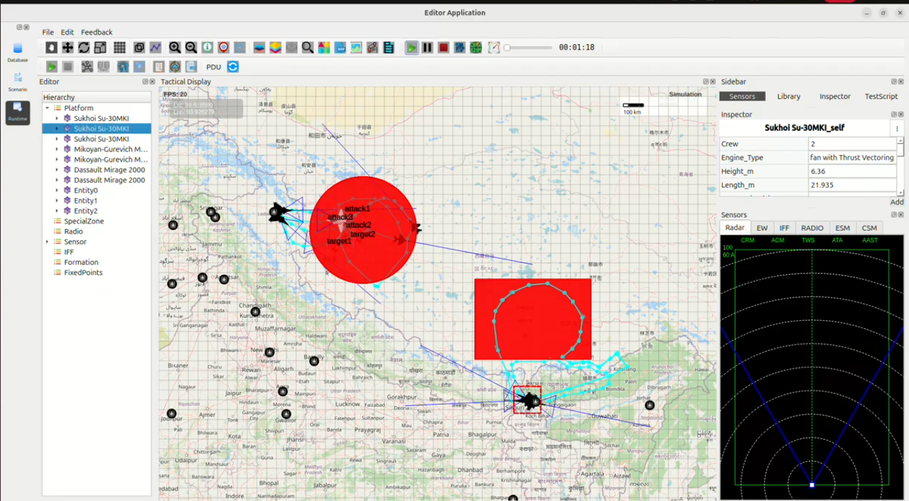

Indian Air Force Multi-Front Offensive Operation – Case Study
This case study presents a simulated multi-front offensive mission executed by the Indian Air Force (IAF) across two strategic theatres:
The Northern Front along Ladakh bordering the LAC
The North-Eastern Front near the Darjeeling–Sikkim sector
The mission objective is the destruction of hostile Chinese military installations, suppression of enemy air activity, and demonstration of India’s deep-strike capability.
1. Operational Context
China has reinforced its forward military structures across the LAC, including:
Radar surveillance sites
Artillery deployment zones
Forward operating camps
Concurrently, military buildup and activity in the Chumbi Valley region poses a strategic risk to India’s North-Eastern corridor near Darjeeling.
In response, India executes a coordinated multi-axis offensive using:
Sukhoi Su-30MKI – Long-range air superiority and strike
Dassault Mirage-2000 – Precision deep-strike platform
2. Target Sectors
Two major Chinese target zones are designated within the simulated operation:
Target Zone A – Ladakh (Northern Front) High-value enemy assets including supply depots, artillery staging points, and fortified positions.
Target Zone B – North-East (Darjeeling–Sikkim Sector) Radar stations, missile batteries, and tactical infrastructure across the border.
Each red circular region in the simulation represents an active strike zone containing:
Sub-targets (attack1, attack2, attack3)
Critical infrastructure (target1, target2)
3. Indian Air Asset Deployment
The IAF deploys a mixed strike package:
Su-30MKI aircraft penetrate and engage northern targets beyond the LAC.
Mirage-2000 aircraft perform precision strike runs on eastern defensive structures.
Aircraft follow:
High-speed attack corridors
Low-altitude radar-evading paths
Defensive looping maneuvers inside contested airspace
4. Mission Execution
Phase 1 – Northern Front Offensive
Su-30MKI fighters strike Chinese military positions inside the Ladakh region.
Multiple attack vectors saturate defenses and neutralize critical assets.
Phase 2 – North-Eastern Offensive
Mirage-2000 aircraft conduct deep-strike operations near the Chumbi Valley.
Looping strike patterns maintain continuous pressure on Chinese defenses.
Phase 3 – Post-Strike Air Superiority
Both aircraft regroup while retaining control of the airspace.
Enemy fighters and ground-based intercept attempts are prevented.
5. Outcome
All designated Chinese targets were successfully destroyed.
No enemy aircraft penetrated Indian airspace during the mission.
High survivability and precision were demonstrated in multi-front offensive warfare.
Deep penetration was achieved simultaneously on two operational axes.
Conclusion
The operation validates India’s capability to execute simultaneous multi-front offensive missions with high accuracy and coordinated fighter integration. The combined strike strength of Su-30MKI and Mirage-2000 ensures effective deterrence and rapid neutralization of hostile infrastructure across extended theatres.
Simulation Image
{kind=link}
